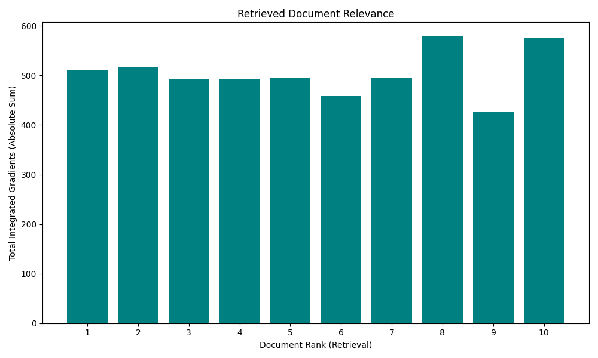
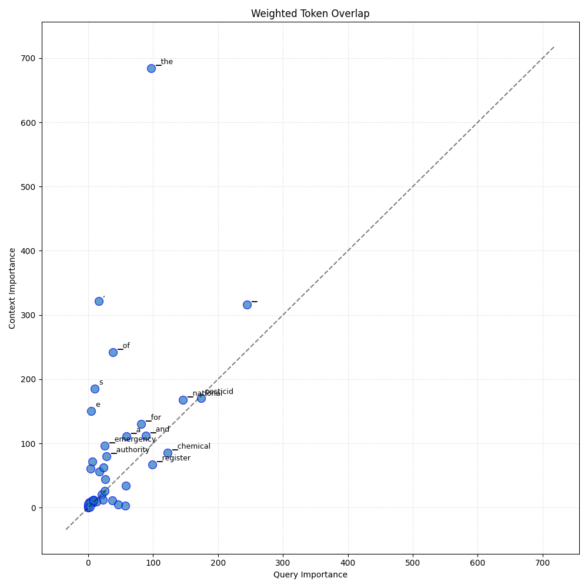

Analysis: query_65
Query: ▁que ry : ▁What ▁are ▁the ▁procedure s ▁and ▁requirements ▁for ▁obtain ing ▁a ▁National ▁Register ▁for ▁chemical ▁ pesticid es ▁in ▁the ▁context ▁of ▁a ▁ phy tos an ita ry ▁emergency , ▁and ▁how ▁does ▁the ▁Comp e tent ▁National ▁Authority ▁manage ▁the ▁import ▁and ▁use ▁of ▁un register ed ▁ pesticid es ▁during ▁such ▁emerge ncies ?
Document Relevance

Weighted Overlap

Token Comparison

Documents
Document 1 (Click to Expand)
▁- ▁In ▁official ly ▁declare d ▁ phy tos an ita ry ▁emerge ncies , ▁the ▁Comp e tent ▁National ▁Authority , ▁in ▁coordina tion ▁with ▁health ▁and ▁environmental ▁authorities , ▁may ▁author ize ▁the ▁import , ▁production , ▁formula tion ▁and ▁use ▁of ▁chemical ▁ pesticid es ▁for ▁agricultura l ▁use ▁not ▁registered ▁in ▁the ▁country , ▁only ▁for ▁the ▁cro p - pest ▁combination ▁that ▁is ▁the ▁object ▁of ▁the ▁emergency ▁and ▁for ▁as ▁long ▁as ▁the ▁situation ▁persist s . ▁The ▁destination ▁of ▁un used ▁quanti ties ▁shall ▁be ▁decided ▁by ▁the ▁above ment ion ed ▁authorities . ▁Each ▁country ▁will ▁collect ▁and ▁evaluat e ▁the ▁information ▁necessary ▁to ▁make ▁the ▁correspond ing ▁decision ▁in ▁relation ▁to ▁the ▁ phy tos an ita ry ▁emergency . ▁The ▁Comp e tent ▁National ▁Authority ▁shall ▁send ▁to ▁the ▁General ▁Secretaria t , ▁as ▁soon ▁as ▁possible , ▁a ▁copy ▁of ▁the ▁emergency ▁declara tion ▁and ▁the ▁list ▁of ▁import ▁author ization s , ▁for ▁the ▁knowledge ▁of ▁the ▁other ▁Member ▁ Count ries . ▁## ▁CHA P TER ▁VI ▁## ▁THE ▁N ATION AL ▁REG I STER ▁OF ▁CHE MIC AL ▁P EST ICI DES ▁FOR ▁A GRI CUL TURA L ▁ USE ▁## ▁Section ▁I ▁## ▁THE ▁O BL IGA TORY ▁NATUR E ▁OF ▁THE ▁ REGISTR ATION ▁## ▁Article ▁- ▁Any ▁person ▁interested ▁in ▁carry ing ▁out ▁the ▁activities ▁of ▁manufacture , ▁formula tion , ▁import , ▁export , ▁packaging ▁or ▁distribution ▁of ▁a ▁chemical ▁ pesticid e ▁for ▁agricultura l ▁use ▁in ▁Member ▁ Count ries , ▁which ▁has ▁comp lied ▁with ▁the ▁provision s ▁of ▁Article ▁10 ▁of ▁this ▁Deci sion , ▁shall ▁obtain ▁the ▁registration ▁of ▁the ▁product ▁or ▁have ▁author ization ▁from ▁its ▁owner , ▁for ▁this ▁purpose . ▁For ▁all ▁import s ▁of ▁finished ▁ pesticid es ▁or ▁technical ▁grade ▁active ▁ingredients , ▁the ▁import er ▁must ▁also ▁have ▁the ▁import ▁author ization ▁gran ted ▁by ▁the ▁Comp e tent ▁National ▁Authority . ▁The ▁gran ting ▁or ▁den ial ▁of ▁the ▁author ization ▁will ▁be ▁de alt ▁with ▁within ▁a ▁period ▁of ▁no ▁more ▁than ▁five ▁(5) ▁working ▁days ▁from ▁the ▁fi ling ▁date . ▁## ▁Section ▁II ▁## ▁ REGISTR ATION ▁RE QUI R EMENT S ▁## ▁Article ▁- ▁The ▁National ▁Registr y ▁shall ▁be ▁gran ted ▁to ▁the ▁formula tion ▁that ▁comp lies ▁with ▁the ▁requirements ▁applicable ▁to ▁it ▁in ▁the ▁context ▁of ▁the ▁provision s ▁of ▁this ▁Deci sion . ▁## ▁Article ▁- ▁To ▁obtain ▁the ▁National ▁Register ▁of ▁a ▁chemical ▁ pesticid e ▁for ▁agricultura l ▁use , ▁the ▁natural ▁or ▁legal ▁person ▁shall ▁submit ▁to ▁the ▁Comp e tent ▁National ▁Authority ▁an ▁application ▁in ▁accordance ▁with ▁the ▁format ▁shown ▁in ▁Anne x ▁3 a , ▁att ach ing ▁to ▁it ▁the ▁data ▁applicable ▁to ▁the ▁technical ▁requirements ▁indicate d ▁in ▁Anne x ▁2 ▁of ▁this ▁Deci sion , ▁in ▁accordance ▁with ▁the ▁provision s ▁of ▁the ▁Technic al ▁Manual . ▁## ▁Article ▁- ▁The ▁Comp e tent ▁National ▁Authority ▁shall ▁grant ▁the ▁National ▁Registr ation ▁Certifica te ▁of ▁a ▁chemical ▁ pesticid e ▁for ▁agricultura l ▁use ▁in ▁the ▁manner ▁presente d ▁in ▁the ▁format ▁of ▁Anne x ▁3 b , ▁when ▁the ▁results ▁of ▁the ▁evaluation ▁demonstrat e ▁that ▁the ▁benefits ▁out we igh ▁the ▁risk s ▁involved ▁in ▁the ▁use ▁of ▁the ▁ pesticid e . ▁## ▁Article ▁- ▁Formula tions ▁with ▁the ▁same ▁product ▁name ▁may ▁not ▁be ▁registered ▁if ▁they ▁have ▁different ▁active ▁ingredients .
Document 2 (Click to Expand)
▁- ▁As ▁a ▁preliminar y ▁step ▁for ▁the ▁commercial ▁registration ▁of ▁a ▁chemical ▁ pesticid e ▁for ▁agricultura l ▁use ▁that ▁is ▁produced ▁in ▁or ▁enter s ▁a ▁Member ▁Country ▁for ▁the ▁first ▁time , ▁the ▁Comp e tent ▁National ▁Authority ▁may ▁author ize ▁the ▁import ▁and ▁use ▁of ▁limited ▁quanti ties ▁of ▁the ▁same ▁to ▁carry ▁out ▁experimental ▁ef fica cy ▁tests . ▁The ▁permit ▁gran ted ▁for ▁this ▁purpose ▁shall ▁be ▁fram ed ▁within ▁specific ▁protocol s ▁approved ▁by ▁that ▁authority , ▁which ▁shall ▁super vise ▁the ▁conduct ▁of ▁the ▁trial s . ▁In ▁case ▁of ▁institution al ▁competition , ▁the ▁Comp e tent ▁National ▁Authority ▁will ▁coordinat e ▁the ▁gran ting ▁of ▁this ▁permit ▁with ▁the ▁health ▁and ▁environment ▁sector s . ▁The ▁following ▁information ▁must ▁be ▁submitted ▁with ▁the ▁permit ▁application : ▁- ▁Name , ▁address ▁and ▁identity ▁of ▁the ▁permit ▁applica nt . ▁- ▁Name , ▁address ▁and ▁identify ing ▁data ▁of ▁the ▁manufacture r , ▁formula tor ▁or ▁import er . ▁- ▁Name ▁of ▁the ▁product , ▁if ▁any . ▁- ▁Common ▁name ▁of ▁the ▁ pesticid e . ▁- ▁Chemi cal ▁name . ▁- ▁Stru ctura l ▁formula . ▁- ▁Chemi cal ▁composition : ▁active ▁ingredients ▁and ▁addit ives ▁( de scription ▁and ▁content ). ▁- ▁Physic al ▁and ▁chemical ▁character istic s . ▁- ▁Type ▁of ▁formula tion . ▁- ▁Quant ity ▁of ▁product ▁required ▁or ▁to ▁be ▁importe d . ▁- ▁Ef fica cy ▁test ▁protocol , ▁in ▁accordance ▁with ▁the ▁provision s ▁of ▁the ▁Technic al ▁Manual . ▁- ▁Indica tions ▁for ▁a cute ▁oral , ▁der mal ▁and ▁in hal ation ▁ toxic ity , ▁90- day ▁sub chron ic ▁ toxic ity ▁and ▁chronic ▁ toxic ity , ▁and ▁muta gene sis ▁tests , ▁minimum ▁2 ; ▁neuro toxic ity ▁where ▁applicable . ▁- ▁Information ▁on ▁eco toxic ity ▁of ▁the ▁product , ▁a cute ▁ toxic ity ▁in ▁bir ds , ▁aqua tic ▁organism s ▁and ▁be es . ▁- ▁Information ▁on ▁basic ▁studies ▁of ▁residu ality , ▁degrada bility ▁and ▁persist ence . ▁- ▁Pre ca u tions ▁for ▁use . ▁- ▁Protection ▁elements ▁for ▁the ▁handling ▁and ▁health ▁control s ▁of ▁the ▁applica tors . ▁- ▁Treatment ▁and ▁disposa l ▁of ▁was te ▁and ▁residu es . ▁- ▁Form ▁of ▁elimina tion ▁of ▁treated ▁cro ps . ▁- ▁Re com mend ations ▁for ▁the ▁doctor ▁and ▁treatment s . ▁The ▁experimental ▁permit ▁shall ▁be ▁issue d ▁within ▁a ▁maximum ▁of ▁ thir ty ▁(30) ▁working ▁days ▁of ▁rece ip t ▁of ▁all ▁the ▁information ▁request ed . ▁This ▁permit ▁shall ▁be ▁valid ▁for ▁one ▁year ▁and ▁may ▁be ▁rene wed ▁for ▁an ▁equal ▁period , ▁by ▁means ▁of ▁a ▁justifi ed ▁request ▁that ▁must ▁be ▁submitted ▁ thir ty ▁(30) ▁working ▁days ▁before ▁its ▁expira tion . ▁Each ▁Member ▁Country ▁shall ▁determine ▁the ▁conditions ▁and ▁procedure s ▁for ▁the ▁is su ance ▁of ▁permit s ▁for ▁experiment ation . ▁## ▁Section ▁III ▁## ▁PH YT OSA NIT ARY ▁E MER GEN C IES ▁## ▁Article ▁- ▁In ▁official ly ▁declare d ▁ phy tos an ita ry ▁emerge ncies , ▁the ▁Comp e tent ▁National ▁Authority , ▁in ▁coordina tion ▁with ▁health ▁and ▁environmental ▁authorities , ▁may ▁author ize ▁the ▁import , ▁production , ▁formula tion ▁and ▁use ▁of ▁chemical ▁ pesticid es ▁for ▁agricultura l ▁use ▁not ▁registered ▁in ▁the ▁country , ▁only ▁for ▁the ▁cro p - pest ▁combination ▁that ▁is ▁the ▁object ▁of ▁the ▁emergency ▁and ▁for ▁as ▁long ▁as ▁the ▁situation ▁persist s .
Document 3 (Click to Expand)
▁## ▁THE ▁COMP UL SOR Y ▁ REGISTR ATION ▁OF ▁MAN UF AC TURE RS , ▁FOR MULA TOR S , ▁IMPORT ERS , ▁EX PORT ERS , ▁PA CK AGER S ▁AND ▁DIS TRI BU TOR S ▁## ▁Article ▁- ▁Manufa c turer s , ▁formula tors , ▁import ers , ▁export ers , ▁package rs ▁and ▁distributor s ▁of ▁chemical ▁ pesticid es ▁for ▁agricultura l ▁use , ▁whether ▁natural ▁or ▁legal ▁person s , ▁must ▁be ▁registered ▁with ▁the ▁Comp e tent ▁National ▁Authority . ▁The ▁manufacture , ▁formula tion , ▁import , ▁export , ▁packaging ▁and ▁distribution ▁of ▁chemical ▁ pesticid es ▁for ▁agricultura l ▁use ▁may ▁only ▁be ▁made ▁by ▁natural ▁person s ▁or ▁legal ▁enti ties ▁that ▁have ▁the ▁respective ▁registration ▁gran ted ▁by ▁the ▁Comp e tent ▁National ▁Authority ▁in ▁compliance ▁with ▁the ▁provision s ▁of ▁this ▁Article . ▁## ▁Article ▁- ▁For ▁purpose s ▁of ▁the ▁registration ▁refer red ▁to ▁in ▁the ▁previous ▁article , ▁the ▁interested ▁party ▁shall ▁submit ▁the ▁following ▁information ▁to ▁the ▁Comp e tent ▁National ▁Authority ▁for ▁ver ification : ▁1. ▁Name , ▁address ▁and ▁ identification ▁data ▁of ▁the ▁natural ▁or ▁legal ▁person ▁and ▁its ▁legal ▁representativ e . ▁2. ▁Location ▁of ▁plant s ▁or ▁factor ies , ▁ware house s ▁and ▁ware house s . ▁3. ▁Description ▁of ▁the ▁facilities ▁and ▁equipment ▁available ▁for ▁the ▁manufacture , ▁formula tion ▁or ▁packaging , ▁storage , ▁handling ▁and ▁disposa l ▁of ▁was te , ▁as ▁the ▁case ▁may ▁be . ▁4. ▁Pro of ▁that ▁you ▁have ▁your ▁own ▁laborator y ▁or ▁that ▁you ▁have ▁the ▁services ▁of ▁a ▁laborator y ▁recognize d ▁by ▁the ▁Comp e tent ▁National ▁Authority ▁or ▁ac credit ed ▁for ▁quality ▁control ▁of ▁products . ▁5. ▁Copy ▁of ▁the ▁license , ▁permit ▁or ▁author ization ▁from ▁the ▁national ▁health ▁and ▁environmental ▁agency , ▁or ▁from ▁the ▁authorities ▁ac ting ▁in ▁their ▁place . ▁6. ▁In ▁all ▁applicable ▁cases , ▁the ▁registra nt ▁should ▁include ▁occupa tional ▁health ▁programs . ▁7. ▁Name ▁of ▁the ▁responsible ▁technical ▁ad visor , ▁with ▁tui tion ▁or ▁equivalent . ▁Article ▁- ▁The ▁registration ▁shall ▁be ▁valid ▁in defini tely ▁and ▁shall ▁be ▁subject ▁to ▁periodic ▁evaluation s ▁by ▁the ▁Comp e tent ▁National ▁Authority , ▁which ▁may ▁suspend ▁or ▁cancel ▁it ▁when ▁the ▁conditions ▁that ▁gave ▁ rise ▁to ▁its ▁gran ting ▁are ▁not ▁comp lied ▁with ▁or ▁modifi ed . ▁## ▁CHA P TER ▁V ▁## ▁OF ▁SPECIAL ▁PER MIT S ▁## ▁Section ▁I ▁## ▁FOR ▁RES E ARCH ▁## ▁Article ▁- ▁The ▁import ▁into ▁the ▁countries ▁of ▁the ▁And ean ▁Sub region ▁of ▁cod ified ▁substance s ▁in ▁the ▁development ▁phase ▁for ▁research ▁purpose s ▁on ▁chemical ▁ pesticid es ▁for ▁agricultura l ▁use ▁is ▁prohibi ted , ▁as ▁long ▁as , ▁in ▁the ▁opinion ▁of ▁the ▁Comp e tent ▁National ▁Authority , ▁the ▁indispensable ▁national ▁capac ities ▁and ▁regulations ▁do ▁not ▁exist ▁to ▁ensure ▁that ▁risk s ▁to ▁health ▁and ▁the ▁environment ▁are ▁minim ized . ▁The ▁Comp e tent ▁National ▁Authority ▁shall ▁inform ▁the ▁General ▁Secretaria t ▁in ▁a ▁reason ed ▁manner , ▁and ▁the ▁General ▁Secretaria t ▁shall ▁inform ▁the ▁other ▁Member ▁ Count ries . ▁## ▁Section ▁II ▁## ▁FOR ▁EXP ERI MENT ATION ▁## ▁Article